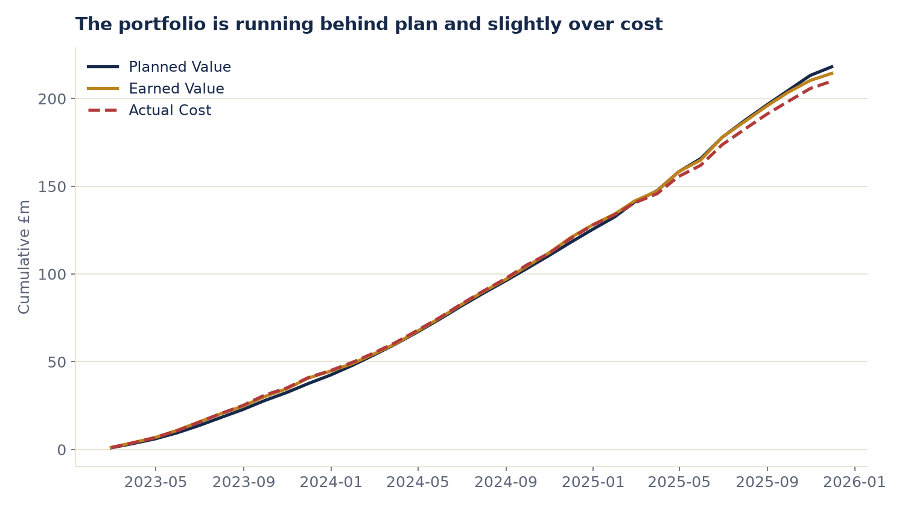
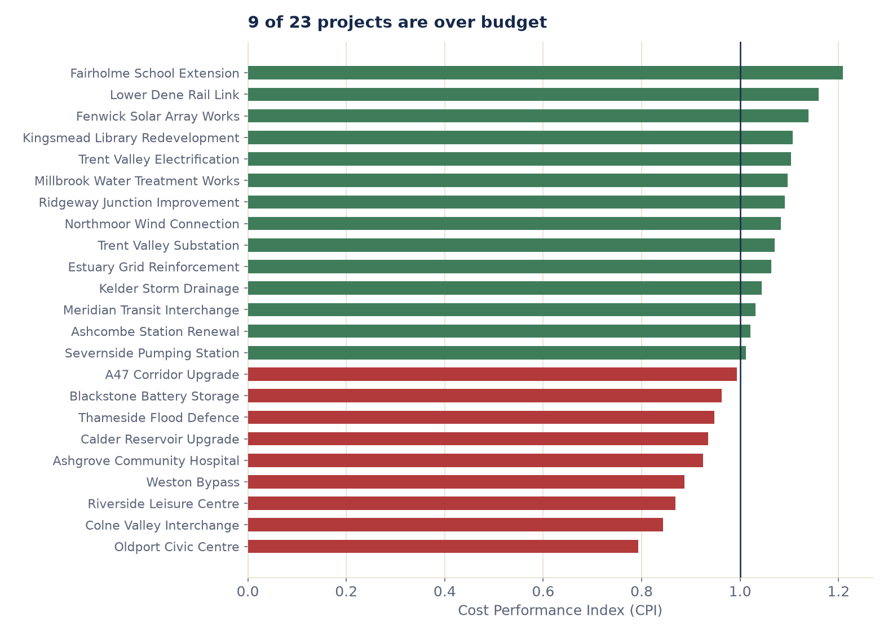
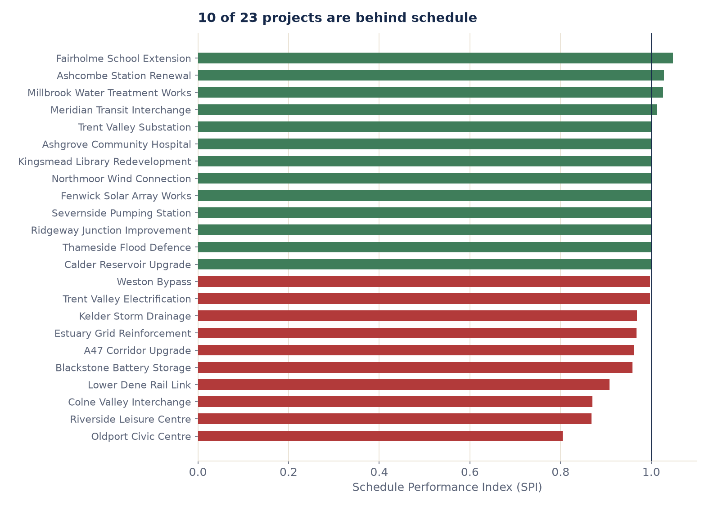
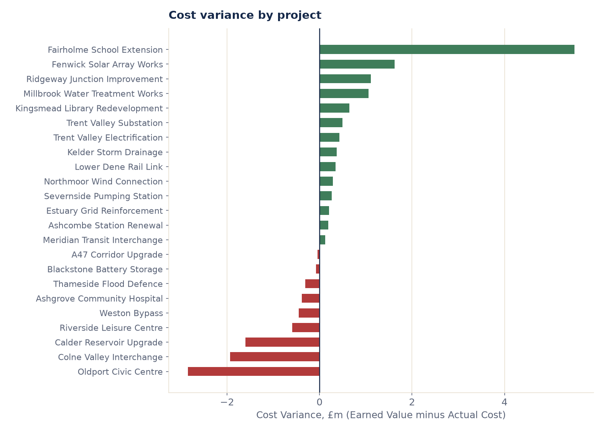
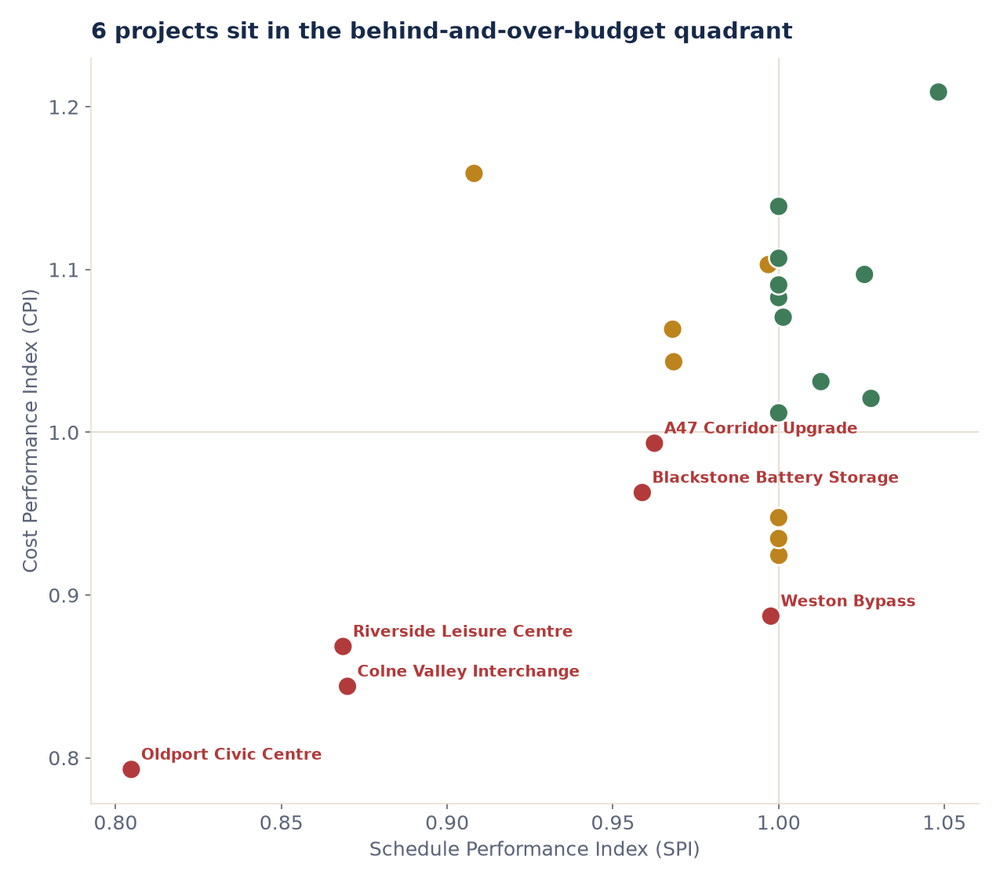
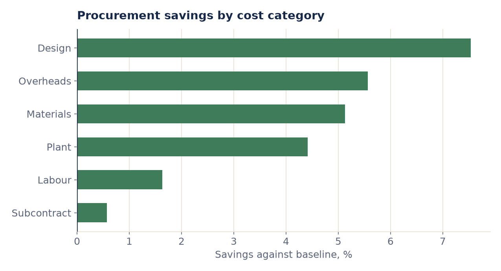
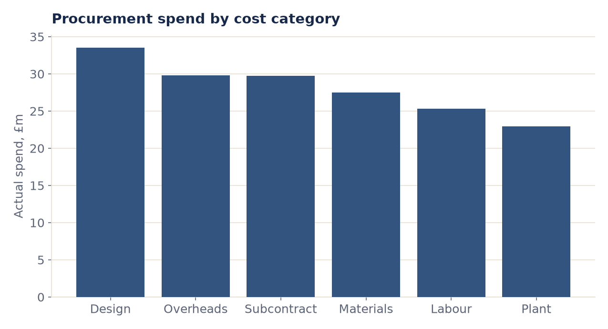

Professional Experience · Commercial & Financial Analytics
Commercial and operational analysis across a 23 project UK infrastructure portfolio: performance reporting, cost analysis, procurement and process automation that supported real procurement decisions. The analytical spine is Earned Value Management (EVM) plus procurement savings.
36 months · 23 projects · EVM + procurement · Power BI original, Python reproduction
About This Page
This analysis was originally built and delivered in Power BI, on live client data, during an infrastructure commercial analytics role. That data is confidential and cannot appear here in any form.
Every chart below is reproduced in Python and Matplotlib, run on a synthetic dataset built to mirror the structure and behaviour of the real portfolio, not to copy any real figures. Alongside each Python chart is a Power BI view: the DAX measure that drove the original, and a note on how it was set up to be interactive. Both the reproduction and the original skill are real; only the data behind the Python version is invented.
The Analysis
23 projects, £261.0M of budget at completion, running from January 2023 to December 2025. At the portfolio level the numbers look broadly healthy: cost performance index (CPI) 1.021, schedule performance index (SPI) 0.983. That aggregate hides the real story, which only shows up once you look project by project.

The signature EVM chart: Planned Value, Earned Value and Actual Cost, cumulative across the whole portfolio. Earned Value sits just under Planned Value for most of the window, the visible signature of schedule slippage, before the gap narrows toward the end.
Interactive setup: slicers by project, region and project type; drill-through to a project detail page.
Planned Value = SUM(fact_evm[planned_value])
Earned Value = SUM(fact_evm[earned_value])
Actual Cost = SUM(fact_evm[actual_cost])
Cumulative Earned Value =
CALCULATE([Earned Value],
FILTER(ALL(dim_date[date_key]), dim_date[date_key] <= MAX(dim_date[date_key])))
Why it matters commercially: the three base measures are simple sums, but plotted cumulatively against the date table they become the one chart a commercial lead reads first, whether the portfolio is on track before looking at a single project.

9 of 23 projects have a CPI below 1.0, meaning they are spending more than the value of work completed. Oldport Civic Centre is the worst, at 0.79.
Interactive setup: CPI shown as a KPI card per project on the drill-through page, conditionally formatted red below 1.0.
CPI = DIVIDE([Earned Value], [Actual Cost])
Why it matters commercially: CPI below 1.0 today is the earliest signal of an overspend that has not been reported yet. It is the number that triggers escalation, well before final cost is known.

10 of 23 projects have an SPI below 1.0. The overlap with the CPI chart above is the point: several projects, Oldport Civic Centre and Colne Valley Interchange among them, are behind on both measures at once.
Interactive setup: same drill-through page as CPI, SPI and CPI shown side by side so both are read together, not separately.
SPI = DIVIDE([Earned Value], [Planned Value])
Why it matters commercially: SPI on its own only says a project is late. Read alongside CPI it says whether being late is also costing money, which is the difference between a scheduling conversation and a commercial one.

Cost variance in cash terms. Fairholme School Extension is £5.5M ahead of its spend; Oldport Civic Centre is £2.8M over, the largest single overspend in the portfolio.
Interactive setup: cost and schedule variance shown as matching KPI cards, with the EAC forecast beneath them on the same page.
Cost Variance = [Earned Value] - [Actual Cost] Schedule Variance = [Earned Value] - [Planned Value] Budget at Completion = SUM(dim_project[budget_at_completion]) Estimate at Completion (EAC) = DIVIDE([Budget at Completion], [CPI]) Variance at Completion = [Budget at Completion] - [Estimate at Completion (EAC)]
Why it matters commercially: EAC forecasts the final cost from current performance, so a CPI below 1 projects an overspend the commercial team can act on early, rather than discovering it at project close.
The portfolio EAC sits almost exactly on budget, within £71,000 of BAC across £261M. That is the trap in reading only the portfolio total: the projects running over are being offset, almost exactly, by the projects running under. Oldport Civic Centre, Colne Valley Interchange and Riverside Leisure Centre are the three projects below 0.9 on both CPI and SPI at once, and none of that shows up in the headline number.

Every project plotted on both measures at once. 6 projects sit in the bottom left quadrant, behind schedule and over budget together; 3 of those are severely behind on both. This is the view that turns two separate bar charts into one escalation list.

Procurement saved £7.6M against a £176.5M baseline, 4.3% overall. Design and Overheads save the most as a share of baseline; Subcontract barely saves anything, 0.6%, despite carrying the third largest total spend.
Interactive setup: a category slicer drives both the savings chart and a supplier league table beneath it, so a category can be filtered straight through to the suppliers behind it.
Procurement Savings = SUM(fact_procurement[baseline_estimate]) - SUM(fact_procurement[actual_spend]) Savings % = DIVIDE([Procurement Savings], SUM(fact_procurement[baseline_estimate]))
Why it matters commercially: a flat savings percentage across the whole portfolio hides exactly which categories are worth renegotiating. Subcontract's near zero savings rate, against real spend, is where the next commercial conversation should start.

Spend by category, for scale against the savings chart above. Design carries the largest single spend at £33.5M, with Overheads and Subcontract close behind.
What I Did
Problems, and How We Solved Them
None of the problems below were solved alone. Each one needed a specific person outside the report itself, the project manager, a finance analyst, the commercial lead, and a decision the team made together.
Finance and project controls used different cost code structures, so costs would not line up against the schedule.
The project manager and a finance analyst.
Agreed a single mapping and a shared cost code taxonomy across both systems.
The EVM model became possible for the first time, and the mapping became the standard used in every later report.
Several projects had no clean cost baseline to measure performance against.
The commercial lead.
Reconstructed baselines from the approved budgets, and documented every assumption made along the way.
Defensible baselines the commercial lead could stand behind in front of the client, not just numbers that happened to exist.
The monthly report took days to assemble by hand across the team.
The wider commercial team who fed data into the report each month.
Automated the extraction and the EVM calculations end to end.
The build time dropped from days to hours, freeing the team for analysis rather than assembly.
The team disagreed on how to forecast final cost, with different people favouring different methods project to project.
The project manager, facilitating a decision across the team.
Standardised on the CPI based EAC formula for every project, rather than leaving it to individual judgement.
Every project was forecast consistently, so portfolio totals could finally be compared and trusted across the board.
Recommendations
Competency Shown
Building CPI, SPI, variances and EAC from raw cost and schedule data, and reading them as a commercial story.
The original build: measures, drill-through, and an interactive slicer setup by project, region and type.
A faithful, portfolio-safe reproduction of the same analysis, chart for chart.
Aligning finance and project controls systems that were never built to talk to each other.
Turning a multi day manual report into an automated monthly refresh.
Working with the project manager, commercial lead and finance team to solve problems the data alone could not.
Reproducing the analysis on synthetic data so the real, client confidential work never has to be shown.